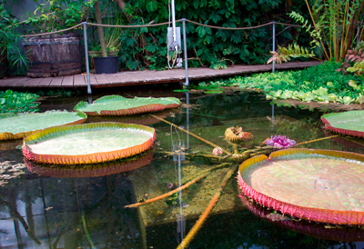
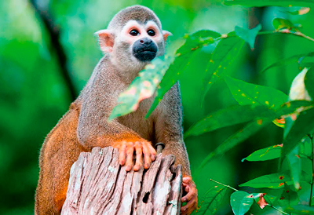
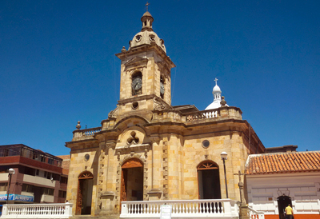
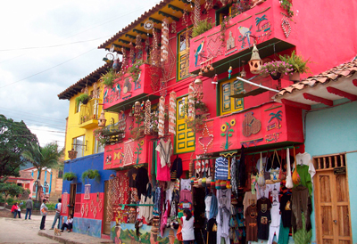
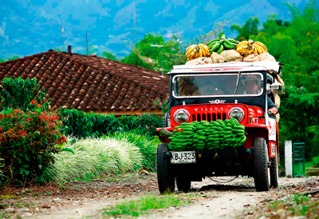
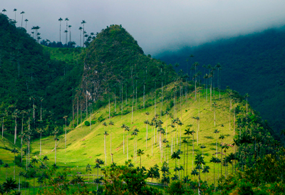
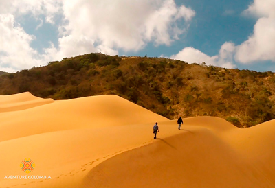
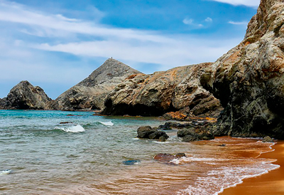

¿Ya sabes a dónde ir?
Por: Jerrika Lozano
Llegaron las vacaciones y Revista Boga te muestra algunos de los mejores lugares de Colombia para vivir experiencias inolvidables en familia, con tu pareja o con quien quieras lo importante es salir de la monotonía sin necesidad de gastar un dineral.

Amazonas
Si eres aventurero y amas la naturaleza, este
destino es increíble pues te dejará con la boca
abierta, es conocido como el pulmón del mundo y
este departamento y alucinante santuario que la
madre naturaleza engalana con una espectacular
fauna y flora te brindará la experiencia de conocer
costumbres indígenas actos de verdadero turismo,
así que decidete a conocer el Amazonas y no te
arrepentirás, la aventura apenas comienza.

Boyacá
Son muchos los municipios que puedes
visitar en Boyacá, lugares cargados de
historia, cultura y riqueza arquitectónica,
aunque poco conocidos para muchos
lograrán atraparte tanto que querrás
quedarte: Ráquira, con una fuerte
tradición ancestral enfocada en la alfarería,
la fabricación de objetos a base de barro,
es un buen lugar para desconectarte y
aprender un arte olvidado. Macanal, este
lugar sacará tu espíritu aventurero, puedes
acampar, escalar y caminar por senderos
ecológicos, mejor dicho naturaleza al cien. Por
último pero el más relajante Paipa, aquí podrás
disfrutar de aguas termales y vivir experiencias
como la lodoterapia, sauna y masajes, además
celebran el Concurso Nacional de Bandas, el Festival
de la Ruana y el Festival del Lago Sochagota, entre
muchas otras ferias y festas.

Eje Cafetero
Aquí puedes encontrar haciendas cafeteras, museos,
parques naturales, parques de atracciones o lugares
en los que puedes sacar el aventurero que hay en ti,
las opciones son muchas así que podrás atreverte a
practicar parapente, rappel, canopy, rafting, escalada,
kayak entre otros, son un sin número de experiencias,
pero si lo tuyo es pasear a caballo también lo puedes
hacer porque viajar por el Eje cafetero es sencillo y
muy estimulante.

La Guajira
Aunque es uno de los puntos más lejanos del
país este lugar desborda magia, su paisaje
es una mezcla de mar, arena y muchos
cactus, esta aventura es casi como viajar
en el tiempo, pues la Guajira está lejos de
todo lo que significa modernidad, no hay
electricidad y no encontarás un hotel en
kilómetros. Cabo de la Vela y
Punta Gallinas son los destinos
preferidos allí podrás conocer el
pilón de azúcar que es un cerro
en el que puedes subir en 15
minutos y disfrutar de una vista
360° del mar, El Faro con los más
bellos atardeceres y, Playa Ojo
de Agua, una piscina natural. Si
buscas la felicidad en pequeños
detalles este destino es para ti,
pues el asombroso paisaje no tiene
comparación.
Estos son solo algunos de los increíbles lugares que puedes visitar en nuestro país, así que no lo pienses y prográmate en estas vacaciones.